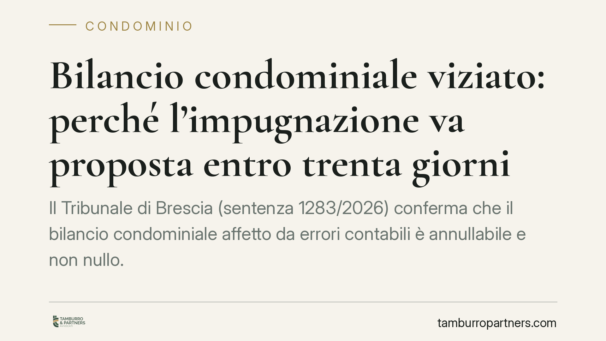

Bilancio condominiale viziato: perché l'impugnazione va proposta entro trenta giorni
Il Tribunale di Brescia (sentenza 1283/2026) conferma che il bilancio condominiale affetto da errori contabili è annullabile e non nullo. La conseguenza è netta: il condomino dissenziente ha solo trenta giorni per impugnarlo, decorsi i quali i conti diventano definitivi e non più contestabili, anche se contengono errori palesi.

Il caso e la decisione
Un condomino aveva contestato il rendiconto approvato dall'assemblea lamentando errori nei conteggi delle spese. La difesa sosteneva che tali vizi rendessero la delibera radicalmente nulla, quindi impugnabile senza limiti di tempo.
Il Tribunale di Brescia, terza sezione civile, ha respinto questa impostazione. Gli errori contabili non toccano l'esistenza stessa della delibera né violano norme imperative poste a tutela di interessi generali: incidono sul suo contenuto. Di conseguenza il bilancio è annullabile, non nullo.
La distinzione non è teorica. Dalla qualificazione dipende il termine entro cui reagire.
Inquadramento normativo
L'articolo 1137 del Codice civile fissa il punto fermo: chi vuole contestare una delibera assembleare deve farlo entro trenta giorni. Il termine decorre dalla deliberazione per chi era presente e dissenziente o astenuto, dalla comunicazione del verbale per gli assenti.
L'articolo 1130 bis disciplina il rendiconto condominiale, imponendo che registri voci, importi e situazione patrimoniale in modo chiaro e intelligibile. Gli articoli 1135 e 1218 completano il quadro, il primo sulle attribuzioni dell'assemblea in materia di spese, il secondo sulla responsabilità per inadempimento, rilevante quando si discute della posizione dell'amministratore.
La giurisprudenza prevalente distingue da tempo tra delibere nulle (oggetto impossibile o illecito, materie estranee alle competenze assembleari, lesione di diritti individuali sui beni comuni) e delibere annullabili (vizi di procedura o di contenuto che non intaccano interessi generali indisponibili). Gli errori di calcolo in bilancio rientrano nella seconda categoria.
Cosa cambia per il condomino
L'effetto pratico è severo. Se il rendiconto contiene un errore - una spesa imputata due volte, un criterio di riparto sbagliato, un saldo non quadrato - il condomino non può aspettare. Ha trenta giorni per agire in giudizio.
Scaduto il termine, la delibera si consolida. I conti diventano definitivi e vincolanti per tutti, anche per chi non era d'accordo, anche se l'errore è evidente. Non esiste una seconda occasione per rimettere in discussione quel bilancio.
Resta aperto un fronte delicato: la responsabilità dell'amministratore. Qui gli orientamenti divergono. Il Tribunale di Brescia e quello di Roma hanno espresso posizioni non del tutto allineate sul se, e in quale misura, l'amministratore risponda ai sensi dell'art. 1218 per aver predisposto un rendiconto scorretto. In assenza di un indirizzo consolidato, l'esito di un'eventuale azione risarcitoria resta incerto e va valutato caso per caso.
Perché il termine è così rigido
La ratio è la stabilità della gestione condominiale. Un condominio deve poter programmare spese, pagamenti e rapporti con fornitori senza il rischio che bilanci di anni prima vengano riaperti. Il termine breve bilancia la tutela del singolo con l'esigenza di certezza della vita comune.
Questo rende indispensabile una verifica tempestiva del rendiconto, non appena ricevuto il verbale.
Cosa fare in concreto
- Leggete subito il verbale: calcolate la scadenza dei trenta giorni dal giorno della delibera (se eravate presenti e dissenzienti) o dalla ricezione della comunicazione (se assenti).
- Verificate i conteggi con l'estratto conto del condominio e con i giustificativi di spesa: segnalate per iscritto ogni discrepanza all'amministratore prima della scadenza.
- Non confidate nella nullità: trattare l'errore contabile come vizio sanabile in ogni tempo è un errore strategico. Agite come se il termine fosse perentorio, perché lo è.
- Documentate il dissenso in assemblea: fate verbalizzare espressamente il voto contrario o l'astensione, per non dover dipendere dalla data di comunicazione del verbale.
- Valutate con un legale la convenienza dell'impugnazione e l'eventuale azione verso l'amministratore, tenendo conto degli orientamenti non univoci sulla sua responsabilità.
Consigliamo di non lasciar trascorrere i giorni in attesa di chiarimenti informali: ogni richiesta all'amministratore non sospende il termine di decadenza.
---
*Contributo informativo a cura di Tamburro & Partners - Avv. Giuseppe Tamburro. Non costituisce parere legale.*
Ogni condominio ha una storia a sé.
Se gestisci un'amministrazione e vuoi un confronto su una specifica questione condominiale, scrivi allo studio. Ti rispondiamo entro un giorno lavorativo.